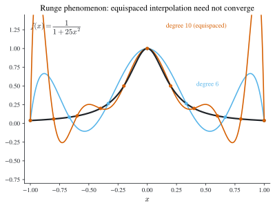

1 Polynomial Interpolation
\[ \newcommand{\R}{\mathbb{R}} \newcommand{\C}{\mathbb{C}} \newcommand{\N}{\mathbb{N}} \newcommand{\E}{\mathbb{E}} \newcommand{\eps}{\varepsilon} \newcommand{\abs}[1]{\left\lvert #1 \right\rvert} \newcommand{\norm}[1]{\left\lVert #1 \right\rVert} \newcommand{\ninf}[1]{\left\lVert #1 \right\rVert_{\infty}} \newcommand{\ntwo}[1]{\left\lVert #1 \right\rVert_{2}} \newcommand{\none}[1]{\left\lVert #1 \right\rVert_{1}} \newcommand{\inner}[2]{\left\langle #1,\, #2 \right\rangle} \newcommand{\bigO}{\mathcal{O}} \newcommand{\dd}{\mathrm{d}} \newcommand{\diff}[2]{\frac{\mathrm{d} #1}{\mathrm{d} #2}} \newcommand{\pdiff}[2]{\frac{\partial #1}{\partial #2}} \newcommand{\spec}{\rho} \newcommand{\cond}{\kappa} \newcommand{\Span}{\operatorname{span}} \newcommand{\rank}{\operatorname{rank}} \newcommand{\tr}{\operatorname{tr}} \newcommand{\diag}{\operatorname{diag}} \newcommand{\argmax}{\operatorname*{arg\,max}} \newcommand{\argmin}{\operatorname*{arg\,min}} \newcommand{\defeq}{:=} \]
The most basic approximation problem is this: we know a function \(f\) only at finitely many points \(x_0,\dots,x_n\) — perhaps because \(f\) is expensive to evaluate, or known only from data — and we want a simple function that agrees with \(f\) there and can be evaluated, differentiated, and integrated everywhere. Polynomials are the natural candidates: they are cheap, smooth, and by the Weierstrass theorem dense in \(C[a,b]\). This chapter builds the polynomial that passes through given data, measures the error it commits, and then confronts the ways plain polynomial interpolation fails — motivating divided differences, Hermite interpolation, and splines.
Throughout, “\(n+1\) nodes \(x_0,\dots,x_n\)” go with a polynomial of degree at most \(n\); keeping that correspondence straight (see Notation) avoids most off-by-one errors.
1.1 The interpolation problem and its error
Given \(n+1\) distinct nodes \(x_0,\dots,x_n\) in \([a,b]\) and the values \(f(x_0),\dots,f(x_n)\), an interpolating polynomial is a \(P\) with \(\deg P\le n\) and \(P(x_i)=f(x_i)\) for every \(i\). Two facts make the problem well posed: such a \(P\) always exists, and it is unique.
Theorem 1.1 (Existence and uniqueness) For distinct nodes \(x_0,\dots,x_n\) there is exactly one polynomial \(P\) of degree \(\le n\) with \(P(x_i)=f(x_i)\), \(i=0,\dots,n\).
Proof. Existence is exhibited by the Lagrange form \[ P(x)=\sum_{k=0}^{n} f(x_k)\,L_{n,k}(x), \qquad L_{n,k}(x)=\prod_{i\ne k}\frac{x-x_i}{x_k-x_i}, \tag{1.1}\] since each Lagrange basis polynomial satisfies \(L_{n,k}(x_i)=\delta_{ik}\), so \(P(x_i)=f(x_i)\). Uniqueness: if \(P\) and \(\tilde P\) both interpolate, their difference \(P-\tilde P\) has degree \(\le n\) yet vanishes at the \(n+1\) distinct nodes, so it is the zero polynomial. \(\square\)
Interpolation would be useless if we could not say how far \(P\) strays from \(f\) between the nodes. The error is controlled by the \((n+1)\)-st derivative of \(f\) and by the node polynomial \(\prod_j (x-x_j)\). The proof rests on a repeated-zeros argument, so we isolate that first.
Lemma 1.1 (Generalized Rolle’s theorem) If \(g\in C^{n}[a,b]\) vanishes at \(n+1\) distinct points of \([a,b]\), then \(g^{(n)}(\xi)=0\) for some \(\xi\in(a,b)\).
Proof. Ordinary Rolle gives a zero of \(g'\) strictly between each adjacent pair of zeros of \(g\): from \(n+1\) zeros of \(g\) we get \(n\) zeros of \(g'\), then \(n-1\) of \(g''\), and so on, until \(g^{(n)}\) has at least one zero. \(\square\)
Theorem 1.2 (Polynomial interpolation error) Let \(f\in C^{n+1}[a,b]\) and let \(P\) be the degree-\(\le n\) interpolant at distinct nodes \(x_0,\dots,x_n\in[a,b]\). Then for each \(x\in[a,b]\) there is \(\xi(x)\in(a,b)\) with \[ f(x)-P(x)=\frac{f^{(n+1)}(\xi(x))}{(n+1)!}\prod_{j=0}^{n}(x-x_j). \tag{1.2}\]
Proof. At a node \(x=x_i\) both sides vanish, so fix \(x\) not equal to any node and define, for \(t\in[a,b]\), \[ g(t)=\bigl(f(t)-P(t)\bigr)-\bigl(f(x)-P(x)\bigr)\, \prod_{j=0}^{n}\frac{t-x_j}{x-x_j}\;\in C^{n+1}[a,b]. \] By construction \(g\) vanishes at the \(n+2\) distinct points \(x,x_0,\dots,x_n\). Applying the generalized Rolle theorem (Lemma 1.1) one order higher, there is \(\xi\in(a,b)\) with \(g^{(n+1)}(\xi)=0\). Now \(P\) has degree \(\le n\) so \(P^{(n+1)}\equiv 0\), and the product is a monic degree-\((n+1)\) polynomial in \(t\) divided by the constant \(\prod_j(x-x_j)\), whose \((n+1)\)-st derivative is \((n+1)!/\prod_j(x-x_j)\). Hence \[ 0=g^{(n+1)}(\xi)=f^{(n+1)}(\xi)-\bigl(f(x)-P(x)\bigr)\frac{(n+1)!}{\prod_j(x-x_j)}, \] which rearranges to Equation 1.2. \(\square\)
An immediate consequence: if \(f\) is itself a polynomial of degree \(\le n\), then \(f^{(n+1)}\equiv0\) and Equation 1.2 forces \(P=f\). Interpolation reproduces low-degree polynomials exactly.
A worked error bound
The two factors in Equation 1.2 are bounded separately. Suppose \(f(x)=1/x\) is interpolated on \([2,4]\) at the three nodes \(2,\,2.75,\,4\), so \(n=2\) and \[ f(x)-P(x)=\frac{f^{(3)}(\xi(x))}{3!}\,(x-2)(x-2.75)(x-4). \] For the derivative factor, \(f^{(3)}(x)=-6x^{-4}\) is largest in modulus at the left endpoint, so \(\abs{f^{(3)}(\xi)}\le 6\cdot 2^{-4}=\tfrac{3}{8}\) on \([2,4]\). For the node polynomial \(g(x)=(x-2)(x-2.75)(x-4)=x^3-\tfrac{35}{4}x^2+\tfrac{49}{2}x-22\), set \(g'(x)=\tfrac12(3x-7)(2x-7)=0\) to get critical points \(x=\tfrac73\) and \(x=\tfrac72\); comparing \(\abs{g(7/2)}=\tfrac{9}{16}\) with \(\abs{g(7/3)}=\tfrac{25}{108}\) and the vanishing endpoints gives \(\max_{[2,4]}\abs{g}=\tfrac{9}{16}\). Combining, \[ \max_{x\in[2,4]}\abs{f(x)-P(x)}\le \frac{1}{3!}\cdot\frac38\cdot\frac{9}{16} =\frac{9}{256}\approx 0.035. \]
1.2 Neville’s method: interpolation as a recursion
Formula Equation 1.1 is theoretically clean but awkward to evaluate and impossible to update when a node is added. Neville’s method instead builds high-degree interpolants by combining low-degree ones, which is exactly what we want when the goal is a value \(P(x)\) at one point (e.g. extrapolating a sequence of estimates to a limit, as in Chapter 2).
Proposition 1.1 (Neville combination) Let \(Q\) interpolate \(f\) at \(x_i,\dots,x_j\) and \(\hat Q\) interpolate \(f\) at \(x_{i+1},\dots,x_{j+1}\). Then \[ P(x)=\frac{(x-x_{j+1})\,Q(x)-(x-x_i)\,\hat Q(x)}{x_i-x_{j+1}} \tag{1.3}\] interpolates \(f\) at all of \(x_i,\dots,x_{j+1}\).
Proof. At \(x_i\) the second term’s factor \((x-x_i)\) kills \(\hat Q\), leaving \(P(x_i)=Q(x_i)=f(x_i)\); at \(x_{j+1}\) symmetrically \(P(x_{j+1})=\hat Q(x_{j+1})=f(x_{j+1})\). At an interior shared node \(x_\ell\) (\(i<\ell\le j\)) both \(Q(x_\ell)=\hat Q(x_\ell)=f(x_\ell)\), and the weights \((x_\ell-x_{j+1})-(x_\ell-x_i)=x_i-x_{j+1}\) sum to the denominator, so \(P(x_\ell)=f(x_\ell)\). Since \(\deg P\le j+1-i\), it is the interpolant on those nodes. \(\square\)
Writing \(Q_{i,\dots,j}\) for the interpolant on \(x_i,\dots,x_j\), Equation 1.3 is the recursion \[ Q_{i,\dots,j+1}(x)=\frac{(x-x_{j+1})Q_{i,\dots,j}(x)-(x-x_i)Q_{i+1,\dots,j+1}(x)}{x_i-x_{j+1}}, \qquad Q_i\defeq f(x_i), \] filling a triangular table whose apex \(Q_{0,\dots,n}(x)\) is the answer. The subscripts are exactly the nodes the entry interpolates — a useful mnemonic. Overwriting the table in place collapses the storage to a single vector:
Store \(Q_i\leftarrow f(x_i)\). For \(k=1,\dots,n\) and \(i=0,\dots,n-k\): \[ Q_i \leftarrow \frac{(x-x_{i+k})\,Q_i-(x-x_i)\,Q_{i+1}}{x_i-x_{i+k}}. \] After the sweep, \(Q_0=P(x)\).
1.3 Divided differences and the Newton form
Neville gives a number; often we want the polynomial in a form cheap to evaluate and, crucially, extensible when a node is appended. The Newton form achieves this by writing \[ P(x)=a_0+a_1(x-x_0)+a_2(x-x_0)(x-x_1)+\dots+a_n\prod_{j=0}^{n-1}(x-x_j), \tag{1.4}\] whose coefficients turn out to be the divided differences of \(f\).
Definition 1.1 (Divided differences) The zeroth divided difference is \(f[x_i]=f(x_i)\), and recursively \[ f[x_i,\dots,x_{j+1}]=\frac{f[x_{i+1},\dots,x_{j+1}]-f[x_i,\dots,x_j]}{x_{j+1}-x_i}. \tag{1.5}\]
Matching Equation 1.4 against the interpolation conditions one node at a time shows \(a_0=f[x_0]\), then \(a_1=f[x_0,x_1]\), and in general \(a_k=f[x_0,\dots,x_k]\): evaluating the difference quotient of \(P\) at successive nodes reproduces exactly the recursion Equation 1.5. Thus \[ P(x)=\sum_{k=0}^{n} f[x_0,\dots,x_k]\prod_{j=0}^{k-1}(x-x_j). \] Appending a node \(x_{n+1}\) costs one more term \(f[x_0,\dots,x_{n+1}]\prod_{j=0}^{n}(x-x_j)\) and leaves the earlier coefficients untouched — the property Lagrange’s form lacks.
The divided differences are computed by filling a table with Equation 1.5; the Newton coefficients are read off the top edge. Two standard implementations trade memory for clarity:
Given nodes x and values f (length N), overwrite F <- f:
function F = NDD1(x, f)
N = length(x); F = f;
for k = 2:N
for j = N:-1:k
F(j) = (F(j) - F(j-1)) / (x(j) - x(j-k+1));
end
endOn return F(k) \(=f[x_0,\dots,x_{k-1}]\), the Newton coefficients of Equation 1.4. The backward j loop is what lets the update overwrite in place without clobbering values still needed.
Divided differences are not merely bookkeeping: the top one is a rescaled derivative, which is why the Newton and Lagrange error terms agree.
Theorem 1.3 (Divided difference as a derivative) If \(f\in C^{n}[a,b]\) and \(x_0,\dots,x_n\) are distinct in \([a,b]\), then \(f[x_0,\dots,x_n]=f^{(n)}(\xi)/n!\) for some \(\xi\in(a,b)\).
Proof. Let \(g=f-P\) with \(P\) the degree-\(\le n\) interpolant. Then \(g\) vanishes at the \(n+1\) nodes, so by Lemma 1.1 there is \(\xi\) with \(g^{(n)}(\xi)=0\). The leading coefficient of \(P\) in Equation 1.4 is \(a_n=f[x_0,\dots,x_n]\), so \(P^{(n)}\equiv n!\,f[x_0,\dots,x_n]\), and \(0=g^{(n)}(\xi)=f^{(n)}(\xi)-n!\,f[x_0,\dots,x_n]\). \(\square\)
1.4 Hermite interpolation: matching derivatives
Sometimes we know not just \(f(x_j)\) but also the slope \(f'(x_j)\), and we want the interpolant to match both. The clean way to see the resulting formulas is to let two nodes coalesce. With two nodes, \(a_1=f[x_0,x_1]=(f(x_1)-f(x_0))/(x_1-x_0)\); as \(x_1\to x_0\) this difference quotient tends to the derivative, which we record as the repeated-node convention \[ f[x_0,x_0]\defeq f'(x_0), \] and more generally \(f[\underbrace{x,\dots,x}_{k+1}]=f^{(k)}(x)/k!\), consistent with Theorem 1.3. Feeding double nodes into the Newton machinery produces the Hermite interpolant. For one double node at each of \(x_0,x_2\) (degree \(3\)), the divided-difference table built on \(z=(x_0,x_0,x_2,x_2)\) yields \[ H(x)=f(x_0)+f'(x_0)(x-x_0)+f[x_0,x_0,x_2](x-x_0)^2+f[x_0,x_0,x_2,x_2](x-x_0)^2(x-x_2), \] which satisfies the four conditions \(H(x_0)=f(x_0)\), \(H'(x_0)=f'(x_0)\), \(H(x_2)=f(x_2)\), \(H'(x_2)=f'(x_2)\). In general:
Definition 1.2 (Hermite interpolant) Given \(f(x_j),f'(x_j)\) at \(n+1\) distinct nodes, the Hermite interpolant \(H\) is the unique polynomial of degree \(\le 2n+1\) with \(H(x_j)=f(x_j)\) and \(H'(x_j)=f'(x_j)\) for all \(j\) — that is \(2n+2\) conditions fixing \(2n+2\) coefficients.
Besides the divided-difference construction there is an explicit basis form, convenient for analysis: \[ H(x)=\sum_{j=0}^n f(x_j)\,H_j(x)+\sum_{j=0}^n f'(x_j)\,\hat H_j(x), \] \[ H_j(x)=\bigl(1-2(x-x_j)L_j'(x_j)\bigr)L_j(x)^2,\qquad \hat H_j(x)=(x-x_j)L_j(x)^2, \] with \(L_j\) the Lagrange basis Equation 1.1. One checks \(H_j(x_i)=\delta_{ij}\), \(H_j'(x_i)=0\), \(\hat H_j(x_i)=0\), \(\hat H_j'(x_i)=\delta_{ij}\), so the two conditions decouple cleanly. The error mirrors Theorem 1.2 but with the node polynomial squared, reflecting the doubled nodes.
Theorem 1.4 (Hermite interpolation error) If \(f\in C^{2n+2}[a,b]\) then for each \(x\) there is \(\xi(x)\in(a,b)\) with \[ f(x)-H(x)=\frac{f^{(2n+2)}(\xi(x))}{(2n+2)!}\prod_{j=0}^{n}(x-x_j)^2 . \]
Proof. Identical in spirit to Theorem 1.2: fix a non-node \(x\), form \(g(t)=(f-H)(t)-(f-H)(x)\prod_j\frac{(t-x_j)^2}{(x-x_j)^2}\), and note \(g\) has \(n+2\) zeros (at \(x\) and the nodes) while \(g'\) has an extra zero at each node because \(H\) matches \(f'\) there. Counting multiplicities gives \(g\) enough zeros to apply Rolle \(2n+2\) times, and evaluating \(g^{(2n+2)}(\xi)=0\) isolates the stated remainder. \(\square\)
1.5 Cubic splines: piecewise, but globally smooth
Raising the degree to fit more data is a trap: for equispaced nodes the interpolant of \(f(x)=1/(1+25x^2)\) oscillates ever more wildly near the ends as \(n\) grows — the Runge phenomenon (Figure 1.1). High-degree global polynomials are the wrong tool. The fix is to keep the pieces low-degree and stitch them together smoothly: a cubic spline uses a different cubic on each subinterval but forces the joins to agree in value and in the first two derivatives.

Definition 1.3 (Cubic spline interpolant) Given nodes \(x_0<\dots<x_n\), a cubic spline \(S\) is a function that on each \([x_j,x_{j+1}]\) equals a cubic \[ S_j(x)=a_j+b_j(x-x_j)+c_j(x-x_j)^2+d_j(x-x_j)^3, \] with \(S(x_j)=f(x_j)\) for all \(j\) (interpolation) and \(S\in C^2[x_0,x_n]\) (matching value, slope, and curvature at every interior node).
The bookkeeping is what makes splines work out to a solvable system. There are \(4n\) unknown coefficients. Interpolation and the requirement that adjacent pieces agree in value give, with \(h_j=x_{j+1}-x_j\), \[ a_j=f(x_j),\qquad a_{j+1}=a_j+b_jh_j+c_jh_j^2+d_jh_j^3 . \] Matching first and second derivatives at the interior nodes adds \[ b_{j+1}=b_j+2c_jh_j+3d_jh_j^2,\qquad c_{j+1}=c_j+3d_jh_j, \] which is \(n+1\) plus \(3(n-1)\) conditions, i.e. \(4n-2\) in all — two short of the \(4n\) unknowns. Eliminating the \(b_j,d_j\) in favor of the curvatures \(c_j\) turns the whole system into a single tridiagonal linear system for \(c_0,\dots,c_n\): \[ h_{j-1}c_{j-1}+2(h_{j-1}+h_j)c_j+h_j c_{j+1} =3\!\left(\frac{a_{j+1}-a_j}{h_j}-\frac{a_j-a_{j-1}}{h_{j-1}}\right), \quad j=1,\dots,n-1. \] The two missing conditions are boundary choices: the natural spline sets \(c_0=c_n=0\) (\(S''=0\) at the ends), while the clamped spline instead prescribes \(S'(x_0),S'(x_n)\). Either way the resulting tridiagonal system is strictly diagonally dominant, hence uniquely solvable in \(\bigO(n)\) by the tridiagonal elimination of Chapter 4 — splines are both smoother than a single high-degree polynomial and cheaper to compute.
Cubics carry exactly four degrees of freedom per piece, which is what matching value, slope, and curvature at both ends of a subinterval consumes. Demanding \(C^3\) would over-determine the pieces; allowing only \(C^1\) wastes the curvature information that makes splines look smooth to the eye. Cubic \(C^2\) is the sweet spot, which is why it wraps car bodies and font outlines alike.
Parametric data — a curve \((x(t),y(t))\) that need not be a graph — is handled by interpolating each coordinate against the parameter \(t\) separately; the piecewise-cubic version with slopes chosen from guide points is the Bézier curve of computer graphics, taken up alongside numerical differentiation in Chapter 2.
1.6 Chapter summary
- For \(n+1\) distinct nodes there is a unique interpolating polynomial of degree \(\le n\) (Theorem 1.1); the Lagrange form Equation 1.1 exhibits it and the Newton form Equation 1.4 makes it extensible.
- The interpolation error Equation 1.2 is \(\dfrac{f^{(n+1)}(\xi)}{(n+1)!}\prod_j(x-x_j)\); bounding the derivative factor and the node polynomial separately gives usable error bounds (Section 1.1.1).
- Neville’s method builds the interpolant’s value by a recursion on low-degree pieces (Equation 1.3); divided differences build the polynomial, with \(f[x_0,\dots,x_n]=f^{(n)}(\xi)/n!\) (Theorem 1.3).
- Hermite interpolation matches values and slopes by coalescing nodes, giving a degree \(2n+1\) polynomial with the squared-node error term of Theorem 1.4.
- Increasing the polynomial degree invites the Runge phenomenon (Figure 1.1); cubic splines avoid it with low-degree pieces joined in \(C^2\), reducing to a tridiagonal system solved in Chapter 4.